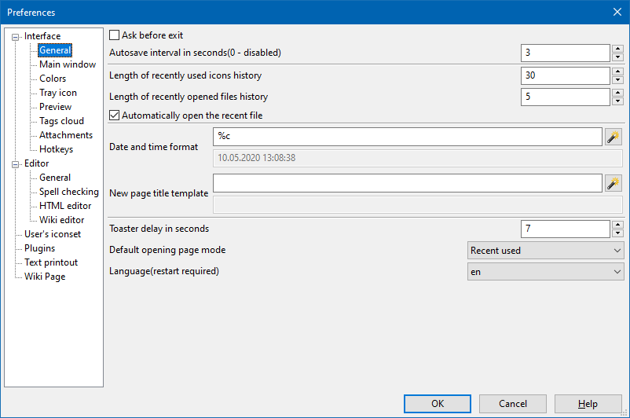

Interface - General

Если установлен флажок Спрашивать подтверждение перед выходом, то программа перед тем как завершить свою работу спросит у вас, действительно ли вы хотите выйти из программы. Поскольку все данные OutWiker сохраняет достаточно часто, а такие подтверждения в других программах нужны в первую очередь для того, чтобы не потерять введенные данные, то особого смысла от наличия этой настройки нет, возможно, в будущем она будет убрана.
Поле ввода Период автосохранения позволяет задать, как часто будет сохраняться открытая в данный момент заметка. Эта величина задается в секундах, если она равна 0, то автосохранение по таймеру будет отключено. Кроме как по таймеру, заметки сохраняются и при других событиях: при выходе из программы, при переключении между заметками, при переключении между вкладками "Вики", "Просмотр" и "HTML" и др.
Поле ввода Размер истории последних используемых значков позволяет задать, сколько значков OutWiker будет сохранять в список последних используемых значков в диалоге создания и редактирования свойств страницы.
Поле ввода Размер истории открытых файлов позволяет задать, насколько длинным должен быть список последних открытых вики в меню Файл.
Если установлен флажок При запуске открывать последний открытый файл, то после перезапуска программы вам не придется заново искать и открывать список заметок, который был открыт в прошлый раз - он будет открыт автоматически.
Поле ввода Формат даты и времени позволяет задать формат, в котором будут отображаться даты создания и редактирования страниц в различных частях программы, например, справа в статусной панели. OutWiker использует формат даты и времени, применяемый в языке Python, но запоминать его не нужно, поскольку справа от поля ввода есть кнопка, при нажатии на которую будет открыто меню, содержащее все возможные элементы данного формата.
Поле ввода Шаблон заголовка новой страницы позволяет задать имя страницы по умолчанию при ее создании. Это удобно, если вы часто создаете страницы, заголовки которых содержат текущую дату или время. В этом поле ввода можно использовать те же элементы подстановки, что и для поля ввода Формат даты и времени (см. выше).
Поле ввода Задержка окна сообщений в секундах позволяет задать время в течение которого отображается информационное окно, появляющееся в правом нижнем углу окна программы в случае возникновения каких-либо ошибок или для уведомления пользователя о каком-либо событии, произошедшем в программе.
Некоторые типы страниц (вики-, HTML-страницы) могут отображаться в двух режимах - в режиме просмотра и в режиме редактирования текста заметки. С помощью выпадающего списка Режим открытия страниц по умолчанию можно выбрать, в каком из этих режимах будет открываться страница при ее выборе в дереве заметок. С помощью данного параметра можно сделать так, чтобы выбираемая страница изначально всегда открывалась в режиме просмотра или режиме редактирования, а также можно установить, что страница будет открываться в том режиме, в котором она была открыта при последнем посещении этой страницы.
С помощью переключателя Язык можно выбрать один из поддерживаемых языков интерфейса. Если выбран пункт "Авто", то язык будет выбираться автоматически в зависимости от настроек операционной системы. Если вы хотите помочь перевести интерфейс программы на какой-нибудь еще язык, то это можно сделать с помощью веб-сервиса crowdin.com.